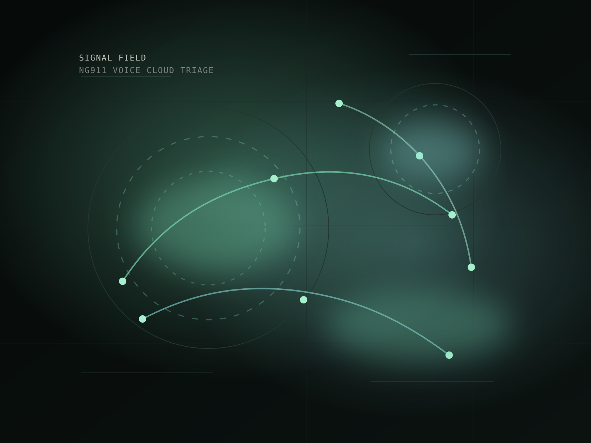
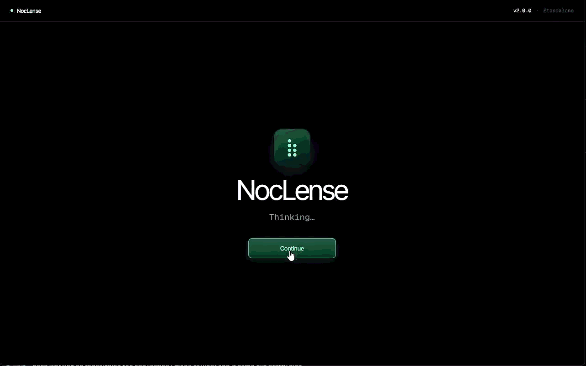

Positioning
Engineer building for investigation speed.
- Public-safety systems
- Voice and routing context
- Operator-first tools
Engineer
I operate NG911, voice, network, and cloud environments, then build tools that make high-pressure investigations easier to read, route, and resolve.

Less noise. Better signal. Cleaner ways through hard systems.
Resume translated into a brand system
Positioning
Current role
Monitoring AWS-hosted public-safety infrastructure, triaging incidents, and supporting Digi devices, FortiGate firewalls, ANI/ALI routing, and distributed NG911 services.
Builder habits
I like building around real workflows: prototype quickly, test against messy inputs, refine the parsing, and keep the interface readable under pressure.

Tooling
Public-safety systems, ANI/ALI services, escalation discipline, and SLA-aware response.
AWS, Datadog, Kibana, Rollbar, and incident tooling used to shorten time to action.
SD-WAN, MPLS, routing protocols, Linux triage, VMware, and voice platform support.

React, TypeScript, Vite, Electron, and NocLense as the clearest personal project signal.
Experience
Each role adds more protocol range, stronger incident judgment, and a tighter sense of what operators need from internal tools.
Oct 2025 - Present
Engineer - NG911 / Public Safety SaaS
Jun 2023 - Oct 2025
Network Analyst - Enterprise Operations
May 2022 - May 2023
Enterprise NOC Technician I
Oct 2021 - May 2022
Help Desk Technician
Featured build

Action